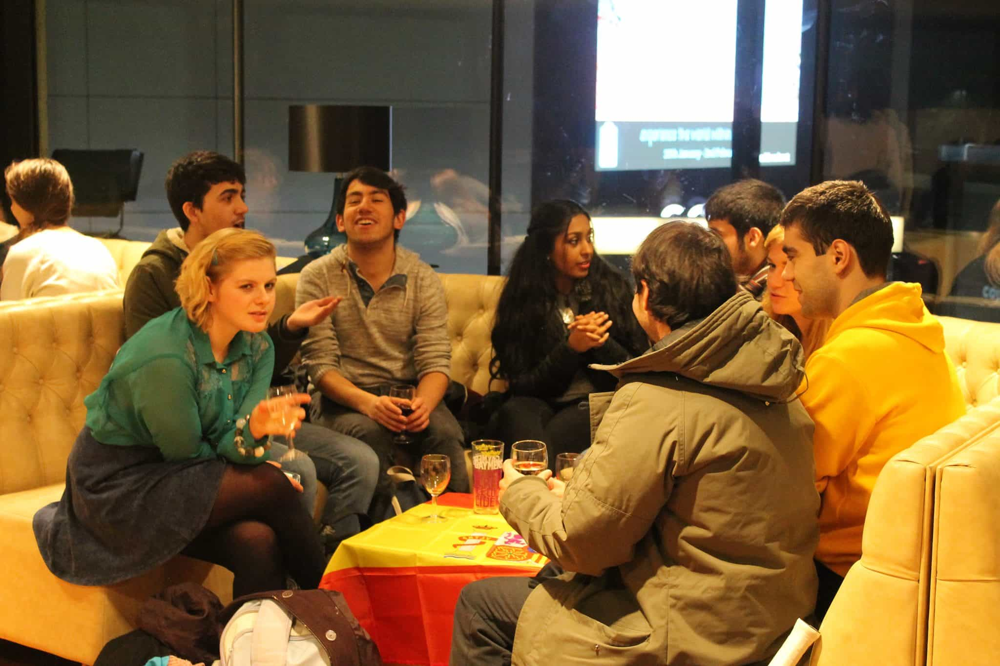
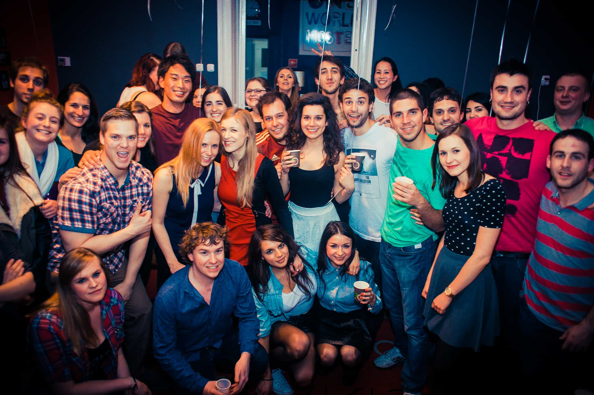

As a man grows older, he will likely lose a significant number of friends and valuable acquaintances, naturally leading to smaller social circles.
While that is not entirely negative, since you won’t have that much in common with blue pill men and annoying females, and perhaps want to focus more on a few important people rather than sheer quantity, it is nevertheless the case that social circles may matter quite significantly for fun, business contacts, and dating opportunities.
A man who is 25 or more can counter eventual shortages with the help from what I regard as fleeting social circles. While such transient groups will likely evaporate as soon as they are dissolved by the surrounding circumstances that enabled them to come into existence in the first place, they are still appropriate for a variety of joyful ends and pastimes. In fact, some of them can create pretty long-lasting memories that transcend any time spent with boring betas or PC female friends.
Language groups
If we exclude online courses, official language studies are typically taught either at a university as a regular course or other educational institutes. I have realized that in at least certain parts of Europe, manifold universities or colleges offer free language courses, or rather “cafés” in the evening, which even make it possible to join if you’re a non-student.
Such language groups will likely include younger women and men that you can hang out with afterwards at bars, restaurants, or home parties. If you are only there for the women, you could at least show up once or twice and see what such groups offer in that regard.
For example, at a university in Europe where I was studying Korean, there were plenty of young Korean and Swedish women at such a language group that was organized once every week. When I, as a single guy, realized that most of them unfortunately were dull or ugly I stopped going there, but still I exchanged contact information with a few 5s and 6s that I didn’t sleep with but met again a couple of times in platonic and friendly contexts.

Evening courses
Another option is various kinds of courses that are taught in the evening, like cooking, dancing, or fighting.
Typically, cooking classes include more older people, dancing younger (if it’s street or hip hop rather than salsa), and fighting more men, but each to his own goal and purpose. Meeting women could for some be considered a mere side effect, rather than the primary reason for going there.

University groups
If you have some form of link to a university or college, you could take advantage of fraternities, mini organizations, and work opportunities that are connected to student environments. It might seem a bit silly to be part of a literary group or work at a campus club or bar when you have passed 25, but if it helps you meet young women then that may be a wise choice.
When I was attending a university in Scandinavia, I acted as a DJ a couple of times and got plenty of contact with the opposite sex just by playing music. I have also heard a close friend saying that to be at the top of a student organization that throws dinners and parties can give you plenty of easy lays.
If you are a bit younger I would advice to seek out such environments and be involved for a limited period of time, but in some contexts a somewhat older male could be included as well.

Hostels
For the sole traveler it is of major importance to seek out hostels. Even if you are 30-40 and could pass as a younger type, you could occasionally do it without feeling more than slightly misplaced.
The benefits from hostels are that you could hit on girls who stay there, go out together in larger groups (which also enable you to cold approach girls outside the group), and meet male companions.
Such fleeting male groups will lead to a beneficial situation for everyone, since every guy gets social proof, which is often required when you go to bars and clubs. Girls will often think that you are a weirdo if you don’t have any friends nearby.
Further, it will likely be more fun to go out together. In 2016, four other guys and I threw a birthday party in my honor and served as wingmen to each other. I had met them only the day before.

Night clubs
For the more experienced and socially skilled guy, fleeting social circles could be formed inside clubs, which might be harder if you are completely alone but still very much possible. If you are part of a group you should try to stand out positively: act confident, look good, and make everyone around them have fun.
If you are alone you could try to cold approach a couple of girls until at least one is hooked, be vague when your main target asks you about where your friends are, and then join the new group for the rest of the evening. More people may be included as the evening proceeds.
One time I ended up being offered numerous drinks from guys who were after my target’s sister and their female friends.

Fleeting social groups may be an important tool that could be used for a variety of reasons, but often with the purpose of meeting females. Such could be formed at universities, evening courses, hostels, or night clubs, to name a few examples.
Read More: What No One Tells You About Approaching Girls Inside Your Social Circle